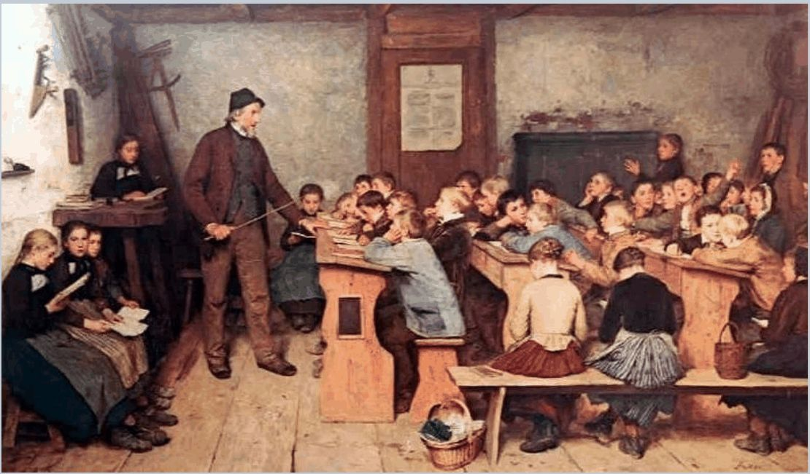
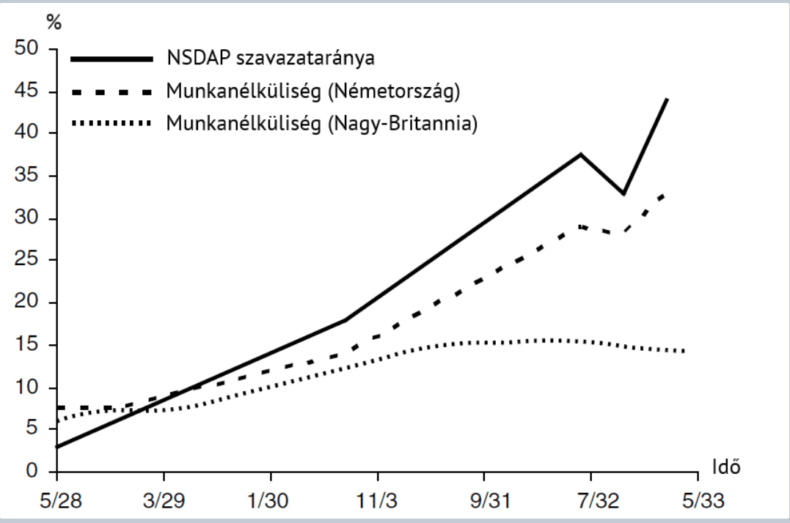

13. fejezet · diák: 197–205
Állam a porcelánboltban: Keynes, tervgazdaság, stagfláció
„Szegénynek és gazdagnak egyaránt jogában áll a híd alatt aludni.”
Anatole France
A 19. században az állam alig avatkozott be a gazdaságba. A 20. században a gazdaság egyik fő szereplőjévé vált. Ez a fejezet azt követi, hogyan és miért történt ez a fordulat – és hogyan próbálta az állam kezelni a válságokat, néha sikerrel, néha katasztrofális következményekkel.
Nyitó eset: a porosz kötelező iskola 197–198. dia
Poroszországban tették a világon először kötelezővé az általános iskolai oktatást. Nagy Frigyes 1763-as rendelete előírta, hogy minden 5 és 13 év közötti fiúnak és lánynak kötelező iskolába járnia. Az 1794-es porosz általános polgári törvénykönyv azt is kimondta, hogy általános, adóból finanszírozott oktatási rendszert kell létrehozni.
A különböző állami beavatkozások egyre nagyobb adóbevételt követeltek, de sok közülük felgyorsította a fejlődést, és segített a szegénység mérséklésében.

A porosz iskola hatása összecseng az 5. fejezettel: Németország 1870-ben már 5,4 évet töltött iskolában, többet, mint Anglia (3,6) – és épp a tudásigényes 2. ipari forradalomban zárkózott fel. Az oktatás pozitív externáliája miatt indokolt állami feladat (14. fejezet).
A fejezet kérdése: mikor segíti az állam a fejlődést, és mikor árt neki?
Útiterv
✏️ Gondold végig – Poroszország
- Miért gyorsíthatta a fejlődést a porosz kötelező, adóból finanszírozott iskola?
Mintaválasz
Mert széles körben, a szegényebb rétegekre is kiterjedően növelte az emberi tőkét. A piac magától kevesebb oktatást nyújtana, mert a szegény családok nem tudnák megfizetni, és az oktatás haszna másoknak is jut (pozitív externália). Az iskolázott munkaerő később a tudásigényes iparágak alapja lett.
Gazdaság és állam a 20. századig – és a fordulat 199–200. dia
Újraelosztási arány: az állami kiadások és a nemzeti jövedelem hányadosa. A 19. század végén sehol nem haladta meg a 10%-ot, és ennek több mint fele a hadseregre, az államigazgatásra, a közbiztonságra és az igazságszolgáltatásra ment – ez az éjjeliőr állam.
Konjunktúrapolitika: a gazdasági ingadozás mérséklését célzó gazdaságpolitikai beavatkozás. Az 1930-as évekig nem létezett: a pénzkínálat a bankokon, majd a nemzeti bankon múlt, az adók pedig nagyon ritkán változtak.
Prociklikusság: ha nőtt a munkanélküliség, vagy csökkentek a bérek, a kormányok adóemeléssel reagáltak (hogy az állami bevétel ne csökkenjen) – ez pedig mélyítette a válságot.
válság → kisebb adóbevétel → adóemelés → még kevesebb jövedelem és kereslet → mélyebb válság
A makroökonómia fogalma (Ragnar Frisch, 1933) és elmélete (Keynes, 1936) csak a 20. század közepén született meg. Addig az önszabályozó gazdaság ideája uralkodott – a közgazdasági ortodoxia: a gazdaságot érő sokkokat az árak és a bérek rugalmas alakulása magától korrigálja (vö. aranystandard, 12. fejezet).
A fordulat
- Az első világháború anyagháború volt. Kiderült, hogy a totális háborúhoz szükséges eszközöket az állami koordináció sokkal hatékonyabban tudja biztosítani, mint a piaci verseny – hadigazdaság: árszabályozás, tervezés, jegyrendszer, az erőforrások átcsoportosítása, hadikötvények és pénznyomtatás.
- Összeomló világrend: a kereskedelem és az árfolyamok rendje összeomlik, az árszintek szétválnak. A háború után demokratizálódó rendszerek (és diktatórikus elhajlások) jönnek; megerősödnek a szakszervezetek (bérszintek) és a szociáldemokrata pártok (jóléti kiadások).
- A világválság meghazudtolja a közgazdasági ortodoxiát: az árak nem alkalmazkodnak rugalmasan.
✏️ Gondold végig – A fordulat
- Miért mélyítette a válságokat a 20. század előtti gazdaságpolitika?
Mintaválasz
Mert prociklikus volt: válságban, amikor csökkent az adóbevétel, a kormányok adót emeltek, ami tovább csökkentette a jövedelmet és a keresletet. Az ortodoxia szerint az árak és bérek magától helyreállítják az egyensúlyt – ezért aktív konjunktúrapolitika nem is létezett.
- Hogyan változtatta meg az első világháború az államról alkotott képet?
Mintaválasz
A hadigazdaságban az állami koordináció (tervezés, árszabályozás, jegyrendszer) hatékonyabbnak bizonyult a piacnál a háborús célokra. Ez megmutatta, hogy az állam képes a gazdaság irányítására – ezt a tapasztalatot vitték tovább a két háború közötti időszakban, demokratikus és totalitárius formában is.
Keynes szerepe 201. dia
John Maynard Keynes a 20. század legnagyobb hatású közgazdásza. Az ún. keynesi közgazdaságtan sok közgazdász munkája, de a kiindulópontja az ő 1936-os könyve.
Konjunktúrapolitika: aktív állami részvétel a gazdasági sokkok kezelésében.
Multiplikátorhatás: válságidőszakban az állami kiadások az elköltött pénz többszörösét generálják a gazdaságban.
Egy kis példa a multiplikátorra: az állam 100 egységet költ egy útépítésre. Az építőmunkások ezt bérként kapják meg, és ha jövedelmük 80%-át elköltik, 80 egységnyi új keresletet teremtenek a boltoknál. A boltosok a 80-ból 64-et költenek el, és így tovább: 100 + 80 + 64 + … = 100 / (1 − 0,8) = 500. A 100 egységnyi kiadás válságban akár ötszörös keresletet teremthet. Ez a 7. fejezet ördögi körének a fordítottja.
- A monetáris politika tudatos alakítása is a válságkezelés fontos eszköze lehet.
- A közgazdászok kezdik érteni a makrogazdaság és a gazdaságpolitika összefüggéseit.
válság → az állam költ (vagy csökkenti a kamatot) → nő a kereslet → a multiplikátor felnagyítja → nő a kibocsátás és a foglalkoztatás
Problémák az 1960-as évektől:
- Tömegdemokráciában sokkal könnyebb nehéz időkben többet költeni, mint jó időkben több adót beszedni – a költségvetési hiány tartóssá válik.
- A várakozások hatása: ha a vállalatok és a szakszervezetek élénkítő gazdaságpolitikára számítanak, olyan lépéseket tesznek (áremelés, bérkövetelés), amelyek növelik az inflációt.
✏️ Gondold végig – Keynes
- Miért lehet hatásos az állami kiadás egy válságban Keynes szerint?
Mintaválasz
Mert válságban az árak és bérek nem alkalmazkodnak gyorsan, és a kereslet hiánya miatt kihasználatlanok az erőforrások. Az állami kiadás keresletet teremt, és a multiplikátorhatás miatt ennek többszöröse jelenik meg a gazdaságban: az egyik ember kiadása a másik jövedelme.
- Ha a fogyasztók a pluszjövedelmük 90%-át költik el, mekkora a multiplikátor?
Mintaválasz
1 / (1 − 0,9) = 10. Minél nagyobb az elköltött hányad, annál nagyobb a multiplikátor – válságban viszont az óvatosság miatt a fogyasztási hajlandóság csökken.
Totalitárius rendszerek: Németország és a Szovjetunió 202–204. dia
A 20. század Európában a totalitárius rendszerekkel való kísérletezés időszaka volt: a német nemzetiszocialista és az orosz–szovjet kommunista kísérleté. Mindkettő az állam rendkívüli gazdasági szerepvállalásával járt.
Németország: hogyan vezetett a válságkezelés a diktatúrához?
Az első világháború utáni időszak:
- Jelentős éves jóvátétel.
- Jelentős külföldi tőkebeáramlás, ami fejleszti a gazdaságot, de kamatfizetési és törlesztési kötelezettséggel jár.
- A világválság idején csökken az export értéke, így nem tudják fizetni a jóvátételt és a tőketörlesztést.
- A kormány visszafogja a fogyasztást (bércsökkentés – Brüning-féle defláció), és fenntartja az aranystandardot (hogy a külföldi tőke el ne meneküljön).
- Ez a két lépés súlyosbítja a válságot: a munkanélküliség az amerikai szintre emelkedik.
- Politikai következmények.

Az ábra a politikai következményeket mutatja: a munkanélküliség és az NSDAP szavazataránya szinte együtt nőtt. Nagy-Britanniában, amely 1931-ben elhagyta az aranystandardot, a munkanélküliség 15% körül megállt.
A Brüning-politika a kor ortodoxiája szerint „helyes” volt (takarékosság, stabil pénz) – éppen ezért tanulságos: a prociklikus megszorítás és az aranystandard görcsös fenntartása a trilemma (12. fejezet) csapdájában mélyítette el a válságot.
A Szovjetunió: a tervutasításos rendszer
Tervutasításos rendszer – permanens hadigazdaság: egy sajátos (de sikertelen) felzárkózási kísérlet. Öt sajátossága:
- az erőforrások és a termelőeszközök magántulajdonának megszüntetése;
- nagyon magas beruházási ráta;
- kényszermunka;
- a tőkejavak gyártásának előnyben részesítése;
- a fogyasztási cikkek elhanyagolása (9. fejezet).
Az 1960-as évekig sikerek a kibocsátás számaiban, aztán hanyatlás. Okai:
- információhiány – a tervező nem tudhatja, mire van szükség milliónyi termékből;
- tervalku és pazarlás a preferált ágazatokban – hiány a többi szektorban;
- az irányított árak és a magántulajdon hiánya miatt nincs ösztönzés a javulásra;
- nincs munkanélküliség, de cserébe nincs szabadság, és alacsony a fogyasztás.
Miért volt gyors az elején, és miért torpant meg? A Solow-modell (1. fejezet) szerint a sok tőke felhalmozása (magas beruházási ráta) egy darabig gyors növekedést hoz, de a hozadék csökken; tartós növekedéshez hatékonyságjavulás kell – ezt pedig a tervgazdaság ösztönzők és információ hiányában nem tudta biztosítani. Ugyanaz a logika, mint a kizsákmányoló intézményeknél.
✏️ Gondold végig – Totalitárius rendszerek
- Miért súlyosbította a Brüning-féle politika a válságot Németországban?
Mintaválasz
A bércsökkentés tovább csökkentette a keresletet (prociklikus politika), az aranystandard fenntartása pedig lehetetlenné tette az önálló kamatpolitikát (trilemma). Így a munkanélküliség az amerikai szintre nőtt, ami politikai radikalizálódáshoz vezetett.
- Miért nem tudta a szovjet tervgazdaság tartósan fenntartani a növekedést?
Mintaválasz
A kezdeti növekedés a tőke tömeges felhalmozásából jött, ami csökkenő hozadékú. A tartós növekedéshez hatékonyságjavulás kellett volna, de a tervezőnek nem volt elég információja, a tervalku pazarláshoz vezetett, az irányított árak és a magántulajdon hiánya pedig nem ösztönzött javításra és innovációra.
Stagfláció: feltámad az ortodoxia 205. dia
Az USA-ban már az 1960-as években infláció alakult ki (12. fejezet), és az inflációs nyomás világszerte erősödött az olajválságok idején (1973 és 1979).
Stagfláció: magas infláció, amely gyenge gazdasági teljesítménnyel és magas munkanélküliséggel párosul.
Miért volt ez csapás a keynesi gazdaságpolitikára? Mert a keynesi recept vagy a munkanélküliséget kezeli (élénkítés – ez növeli az inflációt), vagy az inflációt (fékezés – ez növeli a munkanélküliséget). A stagflációban mindkettő egyszerre magas: bármelyik gyógyszer rontja a másik betegséget. (Mintazh 13.)
A keynesi korszak tanulságai:
- Lassú reakció, „húzd meg – ereszd el” ciklusok: mire a beavatkozás hat, a helyzet már megváltozott, és a politika maga is ingadozást okoz.
- A várakozások beépülnek az árakba – ár-bér spirál: a várt infláció miatt nagyobb bért követelnek, a magasabb bér miatt emelik az árakat, ami újabb bérkövetelést szül.
- A tartós béralkuk egyes országokban hatékonyabbá teszik ezt a típusú gazdaságpolitikát.
A keynesi finomhangolás bírálói – és az újkeynesi válasz
| Irányzat | Fő állítás |
|---|---|
| Monetarizmus | Az infláció megfékezése és a kiszámítható szabályok fontosabbak, mint a keresletszabályozás. |
| Újklasszikus közgazdaságtan | Racionális várakozások és piaci alkalmazkodás: a szereplők megpróbálják előre látni a gazdaságpolitikai döntéseket, ezért azok hatása csekély. |
| Reálkonjunktúra-elmélet | A gazdasági ingadozások fő forrása a termelékenységet érő sokk, nem a kereslet ingadozása. |
| Újkeynesi válasz [V] | A vállalatoknak gyakran van árbefolyásoló erejük, áraikat az egyensúlyi szint fölött állapítják meg; az árak és a bérek ragadósak (nem alkalmazkodnak azonnal), ezért egy keresleti sokk rövid távon a kibocsátást és a foglalkoztatást is módosítja. A keynesi stabilizáció tehát mégis hatásos lehet – ha figyelembe veszi a várakozásokat, a késést és a hitelességet. |
A monetarizmus Milton Friedman, az újklasszikus iskola Robert Lucas nevéhez fűződik. A gyakorlatban a fordulatot Paul Volcker amerikai jegybankelnök 1979 utáni, rendkívül magas kamatokkal végrehajtott inflációcsökkentése jelentette. Ma a legtöbb jegybank az újkeynesi szintézis alapján, független és hiteles inflációs célkövetéssel dolgozik.
✏️ Gondold végig – Stagfláció
- Miért gyengítette a stagfláció a keynesi finomhangolásba vetett bizalmat? (Mintazh 13.)
Mintaválasz
Mert magas inflációt kapcsolt gyenge növekedéshez és magas munkanélküliséghez. A keynesi eszköztár vagy a keresletet élénkíti (ami tovább növeli az inflációt), vagy fékezi (ami tovább növeli a munkanélküliséget) – egyszerre mindkét bajra nem volt gyógyszer. Ráadásul a várakozások és az ár-bér spirál miatt az élénkítés egyre kevésbé működött.
- Hogyan válaszoltak az újkeynesiánusok az újklasszikus bírálatra?
Mintaválasz
Azt mondták, hogy az árak és bérek ragadósak, és a vállalatoknak van árbefolyásoló erejük, ezért egy keresleti sokk rövid távon a kibocsátást és a foglalkoztatást is befolyásolja. A stabilizációs politika tehát hatásos lehet, ha hiteles, és számol a várakozásokkal és a késésekkel.
Összefoglalás
- Az állam már a 18. században is gyorsíthatta a fejlődést (porosz kötelező iskola).
- A 19. század végéig az éjjeliőr állam uralkodott (újraelosztás < 10%), konjunktúrapolitika nem volt, a válságkezelés prociklikus volt; az ortodoxia szerint a gazdaság önszabályozó.
- A fordulatot az első világháború (hadigazdaság), az összeomló világrend és a világválság hozta.
- Keynes: konjunktúrapolitika, multiplikátorhatás – de a tömegdemokrácia és a várakozások problémákat okoztak.
- A totalitárius kísérletek: Németországban a megszorító válságkezelés politikai katasztrófához vezetett; a szovjet tervgazdaság a kezdeti sikerek után az ösztönzők és az információ hiánya miatt hanyatlott.
- A stagfláció után visszatért az ortodoxia (monetarizmus, újklasszikusok, reálkonjunktúra), amire az újkeynesiánusok adtak választ.
Válasz a fejezet kérdésére: az állam segíti a fejlődést, ha olyan közjavakat nyújt, amelyeket a piac nem (oktatás), és ha válságban a kereslet pótlásával megtöri az ördögi kört (Keynes). Árt, ha prociklikusan szorít (Brüning), ha a piacot teljesen a tervvel váltja fel (Szovjetunió), vagy ha a politikai kényelem miatt tartósan túlköltekezik, és a várakozások inflációs spirált indítanak (stagfláció).
Esszéhez: ha ezt látod → ezt használd
| Ha az esetben ez áll… | …akkor ezt a fogalmat / mechanizmust használd |
|---|---|
| Kötelező, adóból finanszírozott oktatás | porosz példa, emberi tőke (→) |
| Válságban adóemelés, megszorítás | prociklikusság, Brüning-féle defláció (→, →) |
| Állami beruházás válságban | Keynes, konjunktúrapolitika, multiplikátor (→) |
| Háborús gazdaság, jegyrendszer, tervezés | hadigazdaság, a fordulat (→) |
| Tervgazdaság gyors indulással, majd stagnálással | tervutasításos rendszer: információhiány, tervalku, ösztönzők hiánya (→) |
| Magas infláció és magas munkanélküliség egyszerre | stagfláció, ár-bér spirál (→) |
| Független jegybank, szabályalapú politika | monetarizmus, hitelesség, újkeynesi szintézis (→) |
Kapcsolódások
- Solow és a hatékonyság (1. fejezet) – a tervgazdaság hanyatlásának kulcsa.
- Kizsákmányoló intézmények (4. fejezet).
- Emberi tőke (5. fejezet).
- Keresleti sokk és nagy világválság (7. fejezet).
- Tőkejavak vs. fogyasztási javak (9. fejezet).
- Aranystandard, trilemma, Bretton Woods bukása (12. fejezet).
- A jóléti állam (14. fejezet).